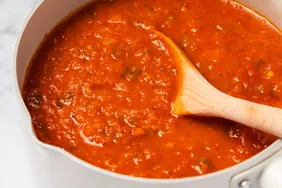

Proper Tomato Sauce

Description
This is how I like my tomato sauce.
It is super versitle and you can change it such that it fits pastas, lasagnas, pizzas.
Ingrediants
- Tinned tomatoes(but my firend like to do the whole - peeling tomatos coring them and then cooking them for long time. This is also good!)
- Olive oil
- Garlic
- salt
- Soy sauce - surprise!
- carrots
- onions
- Celery
- red wine
- Meance meet
Steps
- Heat oil
- Fry the meet - once it looks like the edges are browning/burning, it is ready. Take out of the pan and leave the bits
- saute the onions, celery, carrots, garlic in the pan with the left overs from the meance.
- Add - soy sauce
- Retrun the meet
- cook and add the tomatos
- add red wine